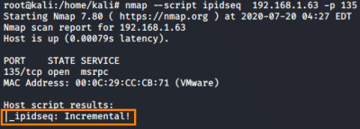
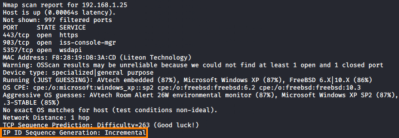
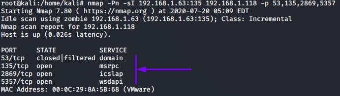

-sI: TCP Idle Scan (Red Teaming)
With the
Idle Scan(-sI) the
attackers can
scan a target without sending a single packet to the target
from their own IP address! Intrusion detection system (IDS) reports will finger the innocent zombie as the
attacker :)
The Idle scan so is a stealth technique that involves the presence of a zombie in the target
network.
A zombie is an host that is not very active in the network, the reason its called an
idle scan.
To know more see “
How
an Idle Scan Works” sub-chapter
1.
Finding a Working Idle Scan Zombie Host•
First method(
better and faster!):
Use NSE script that
automatically check if a host is good zombie candidate
We csn specify also more than one host and use a list
file with -iL
Find a host with the value
Incremental
nmap --script ipidseq <IP_ADDRESS>
• Second method:
Use OS
Fingerprint Scan, with verbose mode(-v) it will print if the IP ID is incremental or not
Find a host with the
value
Incremental for the algorithm Ip ID Sequence Generation
nmap -O -v -n <IP_ADDRESS>
2. Check if it is an
idle host, see chapter
nmap+hping33.
Run the Idle Scan WARNING: For a more
reliable method see chapter
nmap+hping3.
This method not always work since could give us the error “
port ... cannot be used
because it has not returned any of our probes -- perhaps it is down or firewalled” when is not true
nmap -Pn -sI <zombie_IP>:<zombie_open_port> <target_IP> -p <target_ports_to_scan>
-Pn → prevents pings from the original (our) IP ← IMPORTANT
<zombie_open_port> → To run this scan we need to use an open port on the zombie, it is not
important as long as the port is open and we can communicate with it.
-p
<target_ports_to_scan> → we can also not specify the ports and Nmap will use the default ports or
we can also more than one port
-p- → If we want to scan all the ports of the target (from 1 to 65535)
-v → sets the Nmap verbosity
If we inspect the traffic with
Wireshark or with the
nmap
--packet-trace option, we will not see any communication between the target host and our
original IP address
Bibliography:
https://en.wikipedia.org/wiki/IP_fragmentationhttps://nmap.org/book/idlescan.html